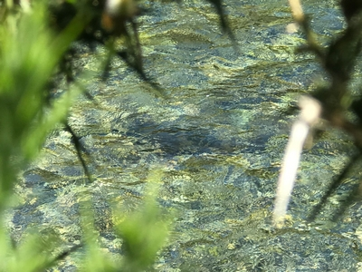
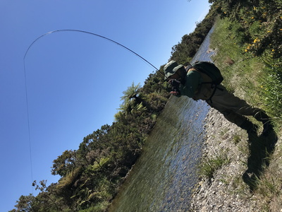
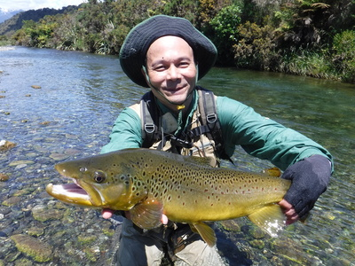
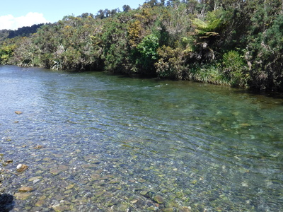

釣行日誌 ＮＺ編 「一期一会の旅：A Sentimental Journey」
ニンフ、テレストリアルにて
11/22(THU)-5
さらにそれから１時間ほど遡行すると、右岸に灌木の生い茂った早瀬に着いた。ディーンが流れ込み脇の緩流部に魚を見つけた。なるほど、青黒い背中が少しずつ左右に動いている。

やや水深があり、鱒は底に着いていたので今度はインジケーターを付け、ビーズヘッドニンフで狙うことになった。ディーンは白いヤーンをごく小さく裂いてティペットに結んだ。アタリが判る最小限の大きさである。ブラウンは賢いのでプラスチックやフォーム製の大きくて派手な色のインジケーターは論外で、ヤーンの色も白しかダメ、サイズも極小でないといけないと言う。
静々と流れの中に立ち込んで下流からキャスト位置まで歩みを進め、２回のフォルスキャストで振り込む。ヤーンインジケーターは小さいので、それほどキャストに抵抗はもたらさない。ニンフとインジケーターが着水し、流れに乗って白いヤーンが下流へ動き出す。余ったラインをリトリーブしてくる。
『！！』
不意に白いヤーンが沈んだのですかさず合わせると空振りである。ディーンが、
「ゴウ！違う違う。今のは根掛かりだ。俺がストライクと言うまで合わせるなよっ！」
と藪の影から大声で呼びかけてきた。
『うーん....何らかの動きがあったらすかさず合わせるのが秘訣なのだけどなぁ....』
まぁ、ガイドさんが付いているのでここはひたすら他力本願の釣りである。
再度キャスト。ちょっと距離が短かったようだ。それでは、と最後に少しシュートしたら今度は飛びすぎてラインの先端が鱒の頭の上に落ちてしまう。
「Done! （一巻の終わり！）」
ディーンがそう言った。またドジを踏んで鱒を脅かしてしまった。いかにニュージーランド向けの迷彩カラーのフライラインを使っていても、鱒の頭上を直撃しては狡猾なブラウンには気取られてしまう。無念！ ２人で歩き出した時に、
「さっきみたいな時にはな、ラインはシュートせずに、足りない距離だけ歩み進んで調節するんだ。その方が確実だよ。」
とディーンがまたも有益なコツを教えてくれた。
広く長い瀬の続くポイントに出た。対岸はブッシュであり、水に浸かった藪や立木の間に暗いよどみが出来ており、鱒が居着いていそうなポイントがいくつも見えた。午後１時半を回り、気温も上がり日差しも強くなったのでドライで行ってみようかと、ディーンはニンフを小ぶりなモスグリーン色のフォーム・アントに替えた。彼でも鱒の姿は見えなかったので、「らしい」スポットを下流から順にブラインドで探って行く。スポットは数多く長く続き、忍耐力が必要とされる。サイトフィッシングとは別種の緊張が続く。
10分ほど粘って釣り上がってくると、灌木が張り出して影を作った所に水中から枯れ木が突き出しているよどみがあった。まだ手首が開く悪い癖は直っていなかったので、ディーンの教えの通りシャツの袖にバットを入れてキャストに臨む。枯れ木の1.5mほど上流にアントを落とし、ドリフトさせてくると黒い鼻先が水面を割った。魚がフライを咥えて沈むのを待ち、大きくしっかりロッドを立てる。乗った！対岸の藪下に潜り込まれないよう、やや強引にラインを手繰ってこちらに引き寄せる。グネグネと抵抗する魚影はなかなかの大きさだ。

ようしラインをリールに巻き取って....などとやっていたら突如ブラウンが対岸へ突進し、藪のグシャグシャに入り込んでしまった。
『うわっ！ヤバいっ！』
「ゴウ！ロッドティップを水中に入れてリールを巻くんだ！」
ディーンが間髪を入れずこんな場合の対処の方法を教えてくれる。ロッドを足もとに倒し、ティップを水面下に沈めてひたすらリールを巻いて魚を引きずり出そうと試みる。しばらくラインの先にグネグネ感が伝わっていたが、ふいに鱒が障害物の中から流心へと泳ぎ出てきた。こうなればしめたものである。
「今度はロッドを下流側に水平に倒して鱒を岸辺に寄せるんだ！」
次々とディーンの的確な指示が飛ぶ。竿を下流に倒し、下手へとサイドプレッシャーを掛けると、鱒はそれを嫌って上流を向き、下流へと逸走しにくくなるらしかった。あとはその体勢のまま、魚体を岸辺へと誘導すれば良いようだ。もっともファイトの初っぱなに猛ダッシュで下流へ走られていなければ、の話だが。
リールを巻き続けていると、なんとか魚が浅場まで寄ってきた。ディーンがグッドタイミングでランディングしてくれ、見事な魚体がネットに収まった。

背中の張り出した立派なオスだった。ディーンの言うには、障害物の中に入り込んだ鱒は、ラインを通してロッドから伝わる振動を嫌って抵抗し、よけいに奥深くへ潜り込むので、ティップを水中に沈めることでその振動が押さえられ、鱒が開けた水域に出てくるのだそうだ。「ほほ～！」と感心させられた。

釣行日誌ＮＺ編 目次へ
サイトマップ
ホームへ
お問い合わせ